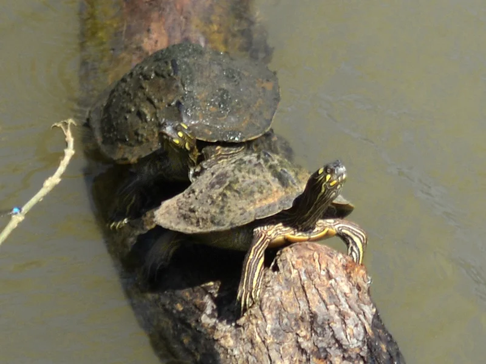

ミシシッピ川水系を中心に分布するチズガメ類の代表格。頭部の黄色い模様と甲羅の脊稜が特徴。フトマユチズガメに近縁で、流水と日光浴を好む活発な中級水棲ガメ。

1年後の甲長は8〜11cm程度（オス）。ミシシッピ川・オウアチタ川水系の流れのある河川に生きる種で、日光浴を強く好む。フィルターの水流に乗るように泳ぐ活発な行動が日課になる。甲羅の地図模様は個体ごとに異なり、観察するほど個性が見えてくる。
10年後、オスは甲長12〜15cm程度のまま。メスは18〜24cmに成長する個体もいる。性別によって必要な水槽サイズが変わるため、幼体購入時から成長後の見込みを複数のシナリオで計画しておくことが大切。15〜25年の寿命を持つ水棲種。
フトマユチズガメはオスが小型のまま成熟するのに対し、メスは18〜24cmに達する場合がある。「小さいチズガメを飼いたい」という理由で購入した場合、幼体時の性別判定が難しいため後からメスと分かり驚くケースが報告されている。購入前から「メスの可能性もある」として大きめの水槽計画を立てておくことが安定飼育につながりやすい。
ミシシッピ川・オウアチタ川水系の流れのある河川・ダム湖に生息。日光浴をとても好み、倒木や岩の上に積み重なって甲羅干しをする。雌雄で顎の形・食性・サイズが大きく異なる。
流水を好むため、フィルターの吐出口で適度な水流を作ることを推奨します。大型化したメスには外部フィルターへの移行を検討してください。
← 横にスクロールできます
| 種名 | 甲長 | 難易度 | 必要水槽 | 特徴 |
|---|---|---|---|---|
| フトマユチズガメ このページ | オス10/メス22cm | 中級 | 60〜90cm | 本種・定番 |
| フトマユチズガメ | オス12/メス20cm | 中級 | 60〜90cm | 近縁・眉斑 |
| ミシシッピチズガメ | オス8〜12/メス22cm | 中級 | 60cm〜 | 定番チズガメ |
| キタチズガメ | オス10/メス28cm | 中級 | 90cm〜 | 最大級 |